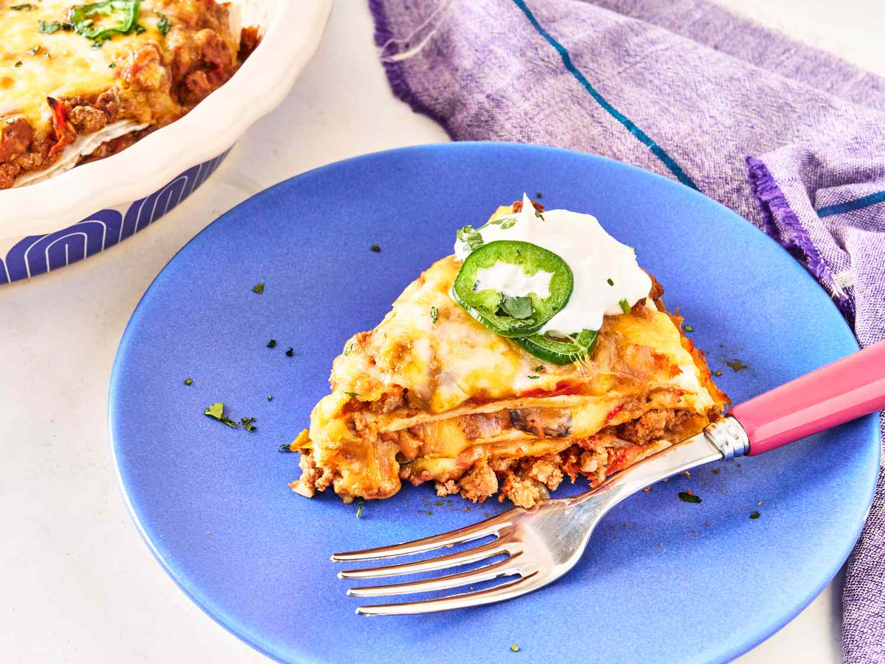

Burrito Pie Recipe

Description
This is a lot like a lasagna, only Mexican-style!
Serve like a pie and garnish with sour cream, salsa, lettuce and tomato.
Make sure you like spicy foods before trying this one. It's hot!
Ingredients
- 2 lbs ground beef
- 1 onion, chopped
- 2 teaspoons minced garlic
- 1 can black olives
- 1 can diced green chili peppers
- 1 can diced tomatoes
- 1 jar taco sauce
- 2 cans refried beans
- 12 flour tortillas
- 9 ounces shredded Colby cheese
Steps
- Preheat oven to 350 degrees F
- In a large skillet over medium heat, saute the ground beef for 5 minutes.
Add the onion and garlic, and saute for 5 more minutes. Drain any excess fat, if desired.
Mix in the olives, green chile peppers, tomatoes with green chile peppers, taco sauce and refried beans.
Stir mixture thoroughly, reduce heat to low, and let simmer for 15 to 20 minutes.
- Spread a thin layer of the meat mixture in the bottom of a 4 quart casserole dish.
Cover with a layer of tortillas followed by more meat mixture, then a layer of cheese.
Repeat tortilla, meat, cheese pattern until all the tortillas are used, topping off with a layer of meat mixture and cheese.
- Bake for 20 to 30 minutes in the preheated oven.
Back to Home